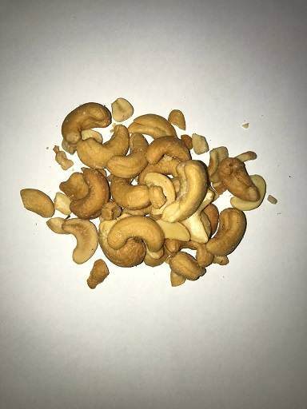
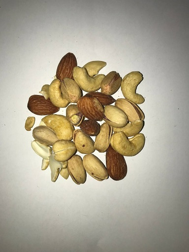
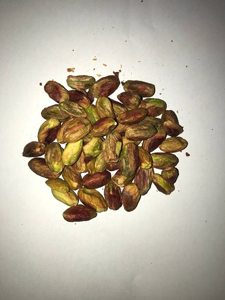
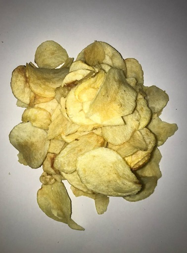

چند وقت پیش یه ویدئویی وایرال شد که یه آقایی داشت قیمت چیپس و بادوم رو مقایسه میکرد. میگفت ۳۰ گرم چیپس ۱۵ هزار تومنه که میشه کیلویی ۵۰۰ هزار تومن و مغز بادوم درختی شاهرودی درجه ۱ کیلویی ۶۰۰ هزار تومنه که ۳۰ گرمش میشه ۱۸ هزار تومن. یعنی اختلاف قیمتشون فقط ۳ هزار تومنه! در مورد عنوان این پست هم من فرض کردم IQ بالای 80 داره این پست رو میخونه و متوجه طنز قضیه میشه. این سوال قدیمی رو که 1 کیلو آهن سنگین تره یا 1 کیلو پنبه و یه عده رو باهاش سرکار میذاشتن فکر میکردم خیلی معروف باشه که نیاز به توضیح نباشه ولی خب با کامنتی که گرفتم و طرف خیلی احساس میکرد سوتی از من گرفته و چقدر باهوشه باعث شد این توضیحات رو اضافه کنم :))
من برام جالب شد که سایر تنقلات رو هم حساب کنم و با قیمت آجیل مقایسه کنم. برای انجام این کار از اطلاعات اسنپمارکت استفاده کردم. یه برنامه نوشتم و اطلاعات تمام سوپرمارکت هایی که در اسنپمارکت تهران حضور داشتند رو جمعآوری کردم و از هر سوپرمارکت ۲۰ تا از پرفروشترین تنقلاتشون رو جمعآوری کردم. توی اپلیکیشن اسنپمارکت میتونید محصولات رو بر اساس گرونترین، ارزونترین و پرفروشترین مرتب کنید.
من ۲۰ تا از پرفروشترین محصولات کل سوپرمارکت های اسنپمارکت تهران رو انتخاب کردم و جدول زیر رو ایجاد کردم :
| نام محصول | قیمت محصول | قیمت ۱ کیلوگرم | |
|---|---|---|---|
| 0 | بادام زمینی سرکهای مزمز ۳۵ گرمی | ۱۵,۰۰۰ | ۴۲۸,۵۷۱ |
| 1 | بادام زمینی نمکی مزمز ۳۵ گرمی | ۱۲,۰۰۰ | ۳۴۲,۸۵۷ |
| 2 | مغز تخمه آفتابگردان مزمز ۴۰ گرمی | ۱۲,۰۰۰ | ۳۰۰,۰۰۰ |
| 3 | چیپس نمکی دلمزه مزمز ۱۸۰ گرمی | ۵۰,۰۰۰ | ۲۷۷,۷۷۷ |
| 4 | چیپس نمکی دلمزه مزمز ۸۵ گرمی | ۲۲,۰۰۰ | ۲۵۸,۸۲۳ |
| 5 | چیپس نمکی چیتوز ۶۰ گرمی | ۱۵,۰۰۰ | ۲۵۰,۰۰۰ |
| 6 | چیپس پیاز و جعفری مزمز ۶۰ گرمی | ۱۵,۰۰۰ | ۲۵۰,۰۰۰ |
| 7 | چیپس فلفل سیاه دلمزه مزمز ۹۰ گرمی | ۲۲,۰۰۰ | ۲۴۴,۴۴۴ |
| 8 | اسنک چرخی چیتوز ۸۰ گرمی | ۱۵,۰۰۰ | ۱۸۷,۵۰۰ |
| 9 | پفک نمکی مینو ۶۰ گرمی | ۱۱,۰۰۰ | ۱۸۳,۳۳۳ |
| 10 | اسنک پنیری طلایی چیتوز ۹۰ گرمی | ۱۶,۰۰۰ | ۱۷۷,۷۷۷ |
| 11 | اسنک موتوری پنیری چیتوز ۱۰۰ گرمی | ۱۶,۰۰۰ | ۱۶۰,۰۰۰ |
| 12 | اسنک کرانچی پنیری چیتوز ۹۵ گرمی | ۱۵,۰۰۰ | ۱۵۷,۸۹۴ |
| 13 | اسنک کرانچی تند و آتشین چیتوز ۹۵ گرمی | ۱۵,۰۰۰ | ۱۵۷,۸۹۴ |
| 14 | اسنک موتوری چیتوز ۱۹۰ گرمی | ۳۰,۰۰۰ | ۱۵۷,۸۹۴ |
| 15 | اسنک طلایی چیتوز ۱۹۰ گرمی | ۳۰,۰۰۰ | ۱۵۷,۸۹۴ |
| 16 | اسنک استیک کچاپ چیتوز ۱۱۰ گرمی | ۱۶,۰۰۰ | ۱۴۵,۴۵۴ |
| 17 | غلات صبحانه شکلاتی بالشتی چیفلکس چیتوز ۹۰ گرمی | ۱۲,۰۰۰ | ۱۳۳,۳۳۳ |
| 18 | کراکر نمکی ترد مینو ۷۵ گرمی | ۷۵۰۰ | ۱۰۰,۰۰۰ |
| 19 | بیسکویت سبوسدار ساقهطلایی مینو ۲۰۰ گرمی | ۱۶,۰۰۰ | ۸۰,۰۰۰ |




جدول زیر قیمت آجیل های مختلف رو نشون میده. برای به دست آوردن این قیمت ها تو گوگل سرچ کردم خرید آجیل آنلاین و این سایت رو باز کردم و از قیمت هاش استفاده کردم :
| نام محصول | قیمت ۱ کیلوگرم | قیمت ۳۵ گرم | |
|---|---|---|---|
| 0 | بادام سنگی | ۱۳۴,۹۰۰ | ۴,۷۲۱ |
| 1 | بادام هندی خام | ۵۳۷,۷۰۰ | ۱۸,۸۱۹ |
| 2 | بادام زمینی با پوست شور | ۱۳۹,۰۰۰ | ۴,۸۶۵ |
| 3 | مغز بادام خام ایرانی | ۵۳۶,۰۰۰ | ۱۸,۷۶۰ |
| 4 | مغز بادام زمینی ریز | ۱۶۱,۱۰۰ | ۵,۶۸۳ |
| 5 | مغز بادام زمینی نمکی | ۲۱۱,۷۰۰ | ۷,۴۰۹ |
| 6 | پسته بادامی خام | ۵۸۴,۵۰۰ | ۲۰,۵۲۷ |
| 7 | آجیل ممتاز | ۴۱۳,۲۰۰ | ۱۴,۴۶۲ |
| 8 | آجیل ساده | ۲۸۳,۳۰۰ | ۹,۹۱۵ |
خلاصه اینکه من خودم ترجیح میدم آجیل بخورم تا چیپس و پفک! قرار نیست تو هر وعده بشینیم نیم کیلو آجیل بخوریم. همین ۳۰ گرم هم جوابه!
nb.neighbours()
| title | date | |
|---|---|---|
| prev | ۶۳ میلیون ثانیه اتلاف عمر | ۱۴۰۲/۰۵ |
| next | در مرکز تبادل کتاب تهران چه میگذرد؟! | ۱۴۰۲/۰۵ |